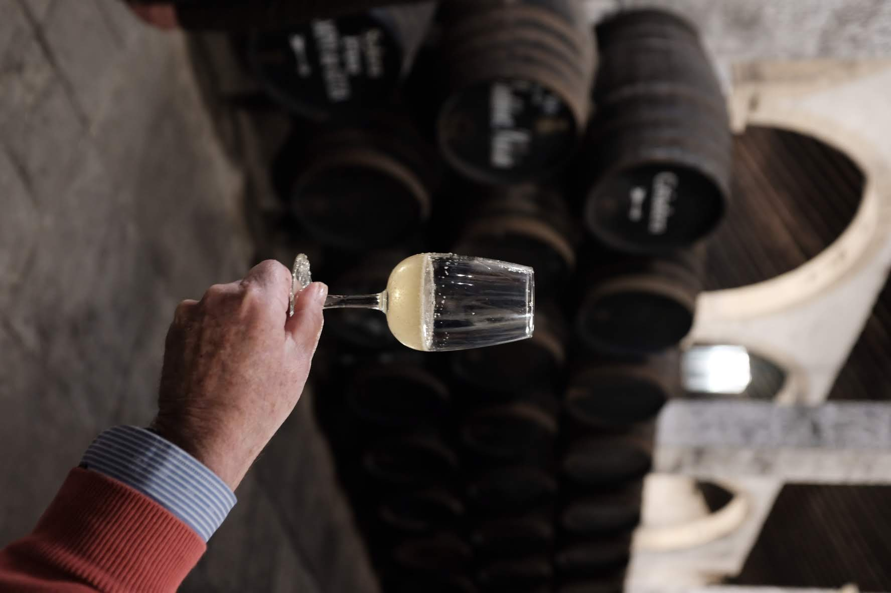

Tequila Excellence
SHERRY BARRELS FOR TEQUILA
Finish your tequila in historic sherry barrels — enhancing natural agave character with rich, sophisticated complexity.
Request a Quote
Finish your tequila in historic sherry barrels — enhancing natural agave character with rich, sophisticated complexity.
Request a QuoteAs tequila producers seek to differentiate premium expressions, sherry barrels have emerged as an invaluable tool to introduce complex organoleptic properties that go far beyond standard oak maturation.
Each style of sherry cask imparts a distinct matrix of flavors, aromas, and mouthfeel components thanks to their unique vinification and aging processes in Jerez. From preserving agave's vegetal character to creating luxury dessert-like profiles, sherry barrels enable extraordinary tequila expressions.

Each type of sherry cask offers unique contributions to tequila development, from preserving agave's natural character while adding refinement to creating bold, complex expressions that redefine premium tequila categories.
Aged by the sea, these barrels introduce unique coastal influence while respecting agave character. Creates sophisticated tequila with distinctive maritime notes and enhanced complexity perfect for premium expressions.
Flor-protected aging preserves tequila's agave-driven vegetal and peppery character while layering in subtle saline and aldehydic notes. Perfect for reposado expressions seeking refinement without overpowering agave essence.
Dual aging creates perfect balance, enriching tequila with nutty, toasted, and oxidative notes while maintaining structural brightness. Ideal for añejo expressions seeking sophisticated complexity.
Full oxidative aging imparts profound aromas of walnut, leather, and dried fig. Creates premium añejo and extra añejo expressions with enhanced mouthfeel viscosity and luxurious, warming finishes.
The rarest sherry style creates extraordinary tequila with exceptional aromatic lift and layered palate structure. Introduces complex citrus peel, balsamic notes, and sophisticated elegance for ultra-premium releases.
Intense residual sugars and oxidative richness dramatically transform tequila. Creates luxury expressions with intense dried fruit notes, molasses depth, and dessert-like mouthfeel for premium positioning.
Incorporating sherry barrels into tequila maturation expands flavor possibilities while deepening textural complexity, influencing ester development, aldehyde reduction, and tannin integration over time.
Careful sherry cask selection preserves tequila's distinctive agave character while adding complementary complexity that enhances rather than masks the spirit's terroir.
Sherry cask compounds interact with tequila's natural aldehydes, creating sophisticated aromatic development while maintaining the bright, clean character essential to premium tequila.
Extended contact with sherry-seasoned wood develops glycerol perception and mouthfeel complexity, creating the luxurious texture that defines ultra-premium aged tequila.

Find answers to the most common questions about our sherry barrels for tequila maturation.
When properly selected and managed, sherry barrels enhance rather than overpower agave character. Fino and Manzanilla casks are excellent for preserving agave essence while adding refinement. Careful monitoring during aging ensures the perfect balance between sherry influence and agave character. Our experts help you select the right cask type and aging protocol to maintain your tequila's distinctive terroir while adding sophisticated complexity.
Aging times depend on the tequila category and sherry cask type. For reposado (2-12 months), Fino and Manzanilla casks work excellently for 6-10 months. Añejo (1-3 years) benefits from Amontillado and light Oloroso casks. Extra añejo (3+ years) can handle robust Oloroso and PX casks for extended aging. Mexico's climate accelerates maturation, so careful monitoring is essential.
Yes, our sherry barrels meet all requirements for tequila aging under CRT (Consejo Regulador del Tequila) regulations. They are American oak barrels with proper capacity. We ensure all barrels are prepared for immediate use in tequila production and provide the necessary paperwork for regulatory compliance and premium labeling.
Sherry barrels are primarily used for aged tequila categories (reposado, añejo, extra añejo). While blanco tequila is typically unaged, short finishing in Fino or Manzanilla casks can create premium expressions. Different sherry types work better for different categories: Fino/Manzanilla for reposado, Amontillado for añejo, and Oloroso/PX for extra añejo. We help you match the right cask type to your specific tequila category and aging goals.
Ready to elevate your tequila? Connect with us for personalized recommendations and sherry barrel solutions.